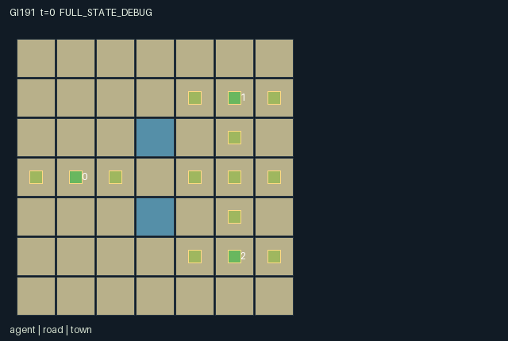

GI191 / SPATIAL
边境路网
铺设局部道路并商议通行权，让载货同伴把商品送到邻镇。未知路网保持遮罩。
Original saved demonstration
Recorded native state, often authored scripts or interventions; information scope and failures are preserved in the original provenance. This is a saved demonstration, not live browser play.

Release verification episode
Untrained uniform legal actions. Actual JAX state sampled along the full original episode; full-state debug camera. No human performance or learning claim.

Run this game
crucibles play --game 191
Start Python locally, then open the address printed by the terminal. Installation, multiplayer, takeover and keyboard controls →
Objective, rewards & ending
Exact task contract
{
"objective": "Sell four finite hometown commodities at the next roles town. Build a useful shared transport network while bargaining over toll revenue and temporary reciprocal access.",
"natural_termination": "Natural completion when every hometown stock is empty and all carried cargo is gone, whether delivered or discarded. Otherwise H=112. No winner or return threshold is used.",
"interaction": "Unloaded builders walk land; a loaded wagon can enter only constructed roads. Paving, outpost ownership, per-entry tolls, eight-step bilateral permits and finite stock alter other roles routes, budgets and import payoffs.",
"observation_access": "Terrain and town coordinates are public. Road and trader details have Manhattan radius 2; own town stock stays known at distance. Unseen local data are -1 with explicit visibility bits. Permit TTL matrix is public. Sale value is private. Debug event arrays and score must not become extra role information."
}Declared per-step reward bounds: 0 to 4. Observability: partially_observable.
Rules
- Guide a grain, copper or wool trader. Every role chooses an action each step. A loaded wagon needs built roads; an unloaded worker may cross ordinary land.
- Walk to face a direction, then pave the cell ahead for 1 timber. Paved roads immediately change the next step travel options for other traders.
- Claim a neutral road underfoot for 2 timber to erect a toll outpost. The owner can toggle its toll. Foreign loaded entry transfers 1 coin.
- Load at your own town. Deliver at the next role town: 0 to 1, 1 to 2, 2 to 0. Seller gains its private sale value and the recipient gains 1.
- Offer passage to next or previous role for 1 coin. The target must stand within one cell to accept an existing offer within 4 steps.
- Acceptance opens both owners roads to the partner for the next 8 movement steps. The public permit counters show the remaining commitment.
- Inspect roads, traders, coins and offers within Manhattan distance 2. Your hometown stock is always known; distant unknown cells stay hidden.
- Rival construction intents use rotating role priority. Co-located traders may negotiate. Cargo can be deliberately discarded to recover unloaded mobility.
- Stone paving, commodity wagons and charter pennants bind native positions and ownership. Human controls show legal actions; scripts do not constrain play.
- The stock-limited trading season ends after all stock and cargo are exhausted, or at H. Runtime and learning remain unverified.
Original mechanism document (historical status wording retained)
# Border Loom — authored native game mechanism
Status: AUTHORED_NOT_EXECUTED. Assigned game-v3-00191; three agents; source attempt 00.
## Game and human interaction
Border Loom is a local-information territorial transport game. Western grain, northeastern copper and southeastern wool traders begin at (1,3), (5,1), (5,5). Their buyers form a cycle: 0 sells at town 1, 1 at town 2, 2 at town 0. There are four original export crates per role and eight timber per builder. Shared trunk roads leave the central (3,3) gap unbuilt. Lake inlet cells (3,2) and (3,4) are impassable. The rectangular map is actual movement geometry.
A human walks a character, sees its wagon load, timber, coin purse and facing, then paves the adjacent cell ahead or negotiates at close range. Arrow or N/E/S/W controls should map to the four native directions; contextual buttons use all other native actions and masks. Co-location is legal. Arbitrary legal command sequences are accepted; included scripts are examples only. Native human controls have not yet been implemented or run by this author.
## Rules and exact chronology
Reset samples only each sellers private per-crate value, uniformly from {2,3}. Geometry, stocks and all subsequent transitions are deterministic; raw_step does not draw randomness.
An unloaded worker may traverse any land tile. A loaded wagon may enter only an existing road. A constructed tile costs one timber, belongs to its builder and initially has zero toll. Claiming an unowned road underfoot costs two timber and opens a toll outpost charging one coin. Hometown tiles cannot be claimed. An owner can toggle its own tile toll. Foreign loaded entry is charged unless a bilateral permit is active; unladen workers and the owner are exempt. Toll payments transfer actual coins.
Masks snapshot incoming legality. Invalid/out-of-range actions become Wait. Simultaneous movement and tolls use incoming road and permit state, so a road laid this step opens movement on the next one. Facing changes only for accepted directional actions. Existing permits/offers age by one. Nonmovement intents then resolve in rotating order t mod 3, followed by the other two roles. Competing road claims are rechecked against current resources and ownership: the first successful claimant pays, others make no change. A player cannot both turn and pave in one step; the visible facing marker is part of its observation.
An offer costs one coin, names next or previous role and lasts four future acceptance opportunities. Acceptance requires incoming offer target and TTL plus incoming Manhattan adjacency at most one. If several offers are eligible, the lowest proposer index is selected. Only incoming offers can be accepted; a new offer cannot be accepted immediately. The accepting pair receives a symmetric eight-step no-toll passage commitment for the next eight movement checks. Acceptance clears the proposers offer slot when the accepting role resolves. A simultaneous replacement issued earlier in rotating order is cleared; one issued later survives. These offer-slot writes follow explicit rotating precedence, not an inferred negotiation.
Loading consumes one original hometown crate. Cargo capacity is one. Delivery at the cyclic buyer consumes cargo, increments that towns received count, pays the sellers private value and pays the receiving role one. No manufactured crates or demand replenishment exist. A player can discard a carried crate to regain unloaded movement, with no reward. Natural completion is empty hometown stocks and no carried crates, including deliberate waste. Otherwise H=112. Terminal state, cause and time absorb under the binding addendum.
## Why partners matter
An unloaded builder may invest in a route that another loaded trader can then use. Ownership can capture coin tolls, but excessive tolling can make other strategies and alternate routes preferable or stall a poor trader. An offer burns a coin before reciprocal passage is guaranteed; acceptance needs a real meeting. A trader can share access before committing timber, build its own route, pay tolls or discard goods to regain mobility. The import recipient benefits from another player completing its physical route. Finite goods and construction budgets make delay and claim order consequential.
This mechanism combines loaded mobility, contested road ownership, finite trade and temporary bilateral permits. It is not a renamed river-flow or crop-growth process. No strategic-richness, equilibrium, solvability, learning or transfer claim is established.
## Information and visual charter
O=252 comprises ten self/public fields, three nine-field local trader records, forty-nine four-field local road records, three three-field town records, a public nine-entry permit matrix and own completed exports. Trader/road visibility is Manhattan distance at most two. Own hometown stock remains visible wherever the trader walks. Other town details use the same radius. Hidden values are -1 beside explicit visibility flags. Map terrain and town coordinates are common knowledge; road ownership/build status outside view are not.
Per-role presentation must mask local agent and road attributes by their declared visibility. Global event arrays and cumulative score are a debug stream, not additional policy or human-role observations. Public treaty changes are visible through the permit matrix. Do not infer hidden ownership from an inactive/unknown road slot. A role panel can show its own private price from the self observation, but not other prices.
Use a territorial trade-map appearance with original traveling merchants, small commodity wagons, stone paving, timber frontier posts, stamped charter pennants, copper ingots, grain sacks and wool bales. Render owned road cells as contiguous native-grid surfaces, not independent dashboard markers. Fog must preserve hidden local state. Direction arrows attach to the real facing field. All artwork remains decoration of manifest positions and ownership; scene.json binds every interactive group.
## Bounds and diagnostics
Stocks, cargo, coins, timber, receipt counts and timers are nonnegative. Initial global coin supply is 15, tolls conserve it and offers reduce it; an individual coin purse is below 16. Timber cannot increase above eight. Each commodity has four crates; cargo is 0 or 1 and received/delivered at most four. Permits are 0..8; offers are 0..4. Observations are in [-1,1]. Per-step reward is 0..4 (own sale plus another traders import benefit), an algebraic bound.
The source-derived road script lets role 2 deliver wool to its actual buyer after role 0 builds the central tile. Its paired hypothesis uses only build-versus-wait and a common wait suffix, then inspects role 2 local information and legal west action. It does not force an illegal west move in the unbuilt branch. A second script illustrates paid offer and close-range acceptance. Seed 191 was chosen once without search. No replay, movement, delivery or interface execution has occurred.
## Complete native action dictionary
- 0: Wait.
- 1: Walk north.
- 2: Walk east.
- 3: Walk south.
- 4: Walk west.
- 5: Pave the cell ahead: 1 timber.
- 6: Claim neutral road underfoot as toll outpost: 2 timber.
- 7: Toggle toll on owned road underfoot.
- 8: Offer 8-step reciprocal passage to next role: 1 coin.
- 9: Offer passage to previous role: 1 coin.
- 10: Accept adjacent existing offer; lowest proposer index.
- 11: Load own commodity at own town.
- 12: Deliver commodity at next roles town.
- 13: Discard carried commodity to travel unloaded.
## Literal source-line evidence
- Actual local visibility: candidate.py line 12; literal source: def visibility(self, s):
- Loaded movement and entry fee: candidate.py line 52; literal source: def destination(self, s, actions):
- Paving and offer prerequisites: candidate.py line 76; literal source: def legal_actions(self, s):
- Rotating scarce claims: candidate.py line 121; literal source: for k in range(3):
- Bilateral accepted passage: candidate.py line 146; literal source: accept = (a[i] == 10) & jnp.any(eligible)
- Trade: candidate.py line 157; literal source: trade = (a[i] == 12) & (n['received'][target] < 4)
- Observation with local sentinels: candidate.py line 175; literal source: def observe(self, s):
## Provenance, reference use and verification limits
This is source attempt 00 of the original blind initial window, not a repair or feedback-selected revision. Current batch ordinals 186..193 were reserved inside the original cap 512; cumulative used-or-reserved count was 194 and feedback count was zero. This author owns only GI190..193 attempt_00 and does not alter other work. Exact actual input paths, byte sizes, hashes and purposes are in author_input_freeze.json, including the prospective human-playability addendum. All four assigned design/request pairs were read; no other candidate, result, selection, project training, develop/confirm, heldout, IR or final-test input was accessed.
The supplied official JaxMARL README informed a prospective dictionary-per-agent adapter boundary. Pgx informed explicit external random keys, masks and environment identity. Craftax README informed native spatial state/presentation and raw versus outer autoreset. PureJaxRL README and Craftax_Baselines_ppo_rnn.py informed only reset/step/scan integration. They are algorithm integration references, not new game libraries or replacements for the frozen learner. No upstream game, algorithm code or visual asset was copied. No network request, model/API invocation, remote session, credential inspection, download or candidate execution was performed.
Signed enums, counters and ownership fields use lossless int32; state booleans use bool. The supplied reset key is not duplicated inside state. This representation adaptation does not imply changing an executed earlier distribution. Each new private-parameter distribution is stated above. Raw terminal semantics follow the addendum: a live call advances t once, natural termination overrides horizon, and an already-done call preserves state/observation/time/cause with zero rewards.
Only stdlib AST, JSON and hash checks were authorized. No candidate or JAX import, eager call, JIT, vmap, rollout, random policy, seed search, replay, RGB render, adapter test or training was run. Shapes/dtypes, masks over trajectories, numerical parity, invariant preservation and paired effects await independent frozen-source integration. Positive, zero, negative, failed and indeterminate results remain valid reports. No reward, seed-count or success-rate acceptance threshold is introduced. Source authorship is not human-playability acceptance or evidence of learning/transfer.
Commands
Roles & abilities
agent_0 Western grain charter
agent_1 Northeastern copper charter
agent_2 Southeastern wool charter
Observation permissions
Training receives only the original observation rows. Role cameras use declared visibility; debug cameras are explicitly marked. Local benchmark records log debug exposure and role takeover history.
Exact observation layout
[
{
"slice": [
0,
3
],
"meaning": "Own role one-hot",
"visibility": "self"
},
{
"slice": [
3,
4
],
"meaning": "Public t/112",
"visibility": "public"
},
{
"slice": [
4,
5
],
"meaning": "Own sale value/3",
"visibility": "self"
},
{
"slice": [
5,
7
],
"meaning": "Own x/6,y/6",
"visibility": "self"
},
{
"slice": [
7,
8
],
"meaning": "Own timber/8",
"visibility": "self"
},
{
"slice": [
8,
9
],
"meaning": "Own coins/16",
"visibility": "self"
},
{
"slice": [
9,
10
],
"meaning": "Own cargo bit",
"visibility": "self"
},
{
"slice": [
10,
37
],
"meaning": "For roles 0..2: visibility, x/6,y/6,coins/16,timber/8,cargo,(offer target+1)/3,offer TTL/4,facing/4. Nonvisible data are -1. Range Manhattan 2 including self.",
"visibility": "local"
},
{
"slice": [
37,
233
],
"meaning": "For 49 cells in y-major order: visibility,built,(owner+1)/3,toll. Nonvisible data are -1. Manhattan range 2.",
"visibility": "local"
},
{
"slice": [
233,
242
],
"meaning": "For towns 0..2: visibility,stock/4,received/4. Own town always known; others Manhattan range 2. Nonvisible data are -1.",
"visibility": "local"
},
{
"slice": [
242,
251
],
"meaning": "Public row-major bilateral permit TTLs/8, owner row and permitted traveller column",
"visibility": "public"
},
{
"slice": [
251,
252
],
"meaning": "Own completed exports/4",
"visibility": "self"
}
]Entity visibility & attributes
[
{
"id": "agent",
"kind": "agent",
"count": 3,
"position": [
"agent_pos"
],
"active": [
"agent_active"
],
"visibility": [
"agent_visibility"
],
"attributes": [
{
"state_path": [
"facing"
],
"meaning": "Facing: 1 north, 2 east, 3 south, 4 west",
"display": "direction"
},
{
"state_path": [
"timber"
],
"meaning": "Timber carried",
"display": "number"
},
{
"state_path": [
"coins"
],
"meaning": "Coin purse",
"display": "number"
},
{
"state_path": [
"cargo"
],
"meaning": "Own commodity aboard",
"display": "flag"
},
{
"state_path": [
"offer_target"
],
"meaning": "Proposed partner: -1 none, otherwise role",
"display": "category"
},
{
"state_path": [
"offer_ttl"
],
"meaning": "Offer steps remaining",
"display": "number"
}
]
},
{
"id": "road",
"kind": "landmark",
"count": 49,
"position": [
"road_pos"
],
"active": [
"road_active"
],
"visibility": [
"road_visibility"
],
"attributes": [
{
"state_path": [
"road_owner"
],
"meaning": "Road owner: -1 public, otherwise role",
"display": "category"
},
{
"state_path": [
"road_toll"
],
"meaning": "Entry toll: 0 or 1 coin",
"display": "number"
}
]
},
{
"id": "town",
"kind": "resource",
"count": 3,
"position": [
"town_pos"
],
"active": [
"town_active"
],
"visibility": [
"town_visibility"
],
"attributes": [
{
"state_path": [
"stock"
],
"meaning": "Own export crates remaining",
"display": "number"
},
{
"state_path": [
"received"
],
"meaning": "Imports accepted",
"display": "number"
}
]
}
]Actual verification & provenance
Per-game execution receipt
{
"game": "gi191",
"status": "PASS",
"verification_revision": 2,
"source_sha256": "35e10e901bd4fd3a219614bea42bb6cb7196524e72d3f9c0764f17528889ad3a",
"seed": 20261101,
"runtime": {
"jax": "0.4.38",
"numpy": "1.26.4",
"devices": [
"TFRT_CPU_0"
]
},
"dimensions": {
"num_agents": 3,
"observation_size": 252,
"num_actions": 14,
"max_steps": 112
},
"checks": {
"eager_reset": {
"status": "PASS",
"seconds": 2.2434885501861572
},
"observation_spaces_legal_masks": {
"status": "PASS",
"seconds": 2.015768527984619
},
"eager_step": {
"status": "PASS",
"seconds": 1.7350714206695557
},
"jit_reset": {
"status": "PASS",
"seconds": 0.5541632175445557
},
"jit_step": {
"status": "PASS",
"seconds": 2.150848150253296
},
"eager_jit_integer_parity_float_measurement": {
"status": "PASS",
"seconds": 0.001004934310913086
},
"jit_vmap_reset": {
"status": "PASS",
"seconds": 0.5814831256866455
},
"jit_vmap_step": {
"status": "PASS",
"seconds": 3.6738274097442627
},
"outer_autoreset_api": {
"status": "PASS",
"seconds": 3.3172569274902344
},
"full_original_horizon_episode_and_render": {
"status": "PASS",
"seconds": 1.6424388885498047
}
},
"human_scores": null,
"browser_controls": "PENDING",
"failures": [],
"elapsed_seconds": 21.517496347427368,
"float_parity_max_abs": 5.960464477539063e-08,
"numerical_parity": "UNDETERMINED_NONZERO_FLOAT_DIFFERENCE",
"raw_terminal_absorbing": "PASS",
"terminal_outer_reset": "PASS",
"episode_steps": 112,
"scripted_random_returns": [
0.0,
0.0,
0.0
],
"terminal": true,
"demo_information": "FULL_STATE_DEBUG",
"demo_frames": 29,
"render_roles_checked": 3
}Chromium control verification
{
"game": "gi191",
"status": "PASS",
"human_scores": null,
"engineering": true,
"checks": [
"catalog_selected_and_real_native_reset",
"dom_queue_and_native_step",
"second_participant_ownership_and_native_joint_step",
"all_roles_individually_controllable_no_role_cap",
"explicit_debug_camera",
"release_to_pure_ai_without_reset"
],
"seconds": 5.834946870803833
}Original identity and file hashes
{
"id": 191,
"key": "gi191",
"title": "边境路网",
"summary": "铺设局部道路并商议通行权，让载货同伴把商品送到邻镇。未知路网保持遮罩。",
"tags": [
"局部信息",
"铺路贸易"
],
"family": "spatial",
"dimensions": {
"num_agents": 3,
"observation_size": 252,
"num_actions": 14,
"max_steps": 112
},
"source_sha256": "35e10e901bd4fd3a219614bea42bb6cb7196524e72d3f9c0764f17528889ad3a",
"manifest_sha256": "7722d3374cf0f434bd48ab5b744e0f6ba1e2e22b4c36fc5a3f486f7022495f92",
"files": [
{
"file": "candidate.py",
"sha256": "35e10e901bd4fd3a219614bea42bb6cb7196524e72d3f9c0764f17528889ad3a",
"bytes": 12460,
"origin": "work/exp_2/game_incubator_v3/community_games222_225_visualization_root222_v1/native154_candidate/registry/v2/games/game-v3-00191/candidate.py"
},
{
"file": "manifest.json",
"sha256": "7722d3374cf0f434bd48ab5b744e0f6ba1e2e22b4c36fc5a3f486f7022495f92",
"bytes": 14308,
"origin": "work/exp_2/game_incubator_v3/community_games222_225_visualization_root222_v1/native154_candidate/registry/v2/games/game-v3-00191/manifest.json"
},
{
"file": "scene.json",
"sha256": "5f2859fbf7cff3cfdd3360c8d8fea45f144f31c69a17f49f34ec1f20d69eb399",
"bytes": 8567,
"origin": "work/exp_2/game_incubator_v3/community_games222_225_visualization_root222_v1/native154_candidate/registry/v2/games/game-v3-00191/scene.json"
},
{
"file": "mechanism.md",
"sha256": "f4c6d94009c1b1ee4139939364b5a09c27bc4687beefce2a05acfd48b7438298",
"bytes": 10737,
"origin": "work/exp_2/game_incubator_v3/sources/game-v3-00191/attempt_00/mechanism.md"
},
{
"file": "playthrough.json",
"sha256": "2eaa82823629992f5b07a385c56996a6228b475b1daa9fb1d6cf392bec4ea554",
"bytes": 3808,
"origin": "work/exp_2/game_incubator_v3/sources/game-v3-00191/attempt_00/playthrough.json"
}
],
"original_status": "NATIVE154_REFERENCE",
"original_saved_replay": true,
"release_validation": "PASS",
"human_scores": null,
"browser_validation": "PASS"
}